Using phonopy as a python module¶
This is under development. Configurations may alter. Requests or suggestions are very welcome.
Import modules¶
After setting the phonopy python path, the phonopy module is imported by:
from phonopy import Phonopy
Crystal structure is defined by the PhonopyAtoms class. This
class is made to be similar to the ASE’s Atoms
class. The PhonopyAtoms module is imported by:
from phonopy.structure.atoms import PhonopyAtoms
In the older versions of phonopy, the class name was simply Atoms,
so it should be imported as:
from phonopy.structure.atoms import Atoms as PhonopyAtoms
Work flow¶
The work flow is schematically shown in Work flow.
Pre-process¶
The first step is to create a Phonopy object with at least two
arguments, a unit cell (PhonopyAtoms object, see
PhonopyAtoms class) and a supercell matrix (3x3 array, see
Supercell matrix). In the following example, a
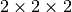 supercell is created. The displacements to
be introduced to the supercell are internally generated by the
generate_displacements() method with the distance keyword
argument. The supercells with displacements are obtained by
get_supercells_with_displacements() method as a list of
PhonopyAtoms objects.
import numpy as np
from phonopy import Phonopy
from phonopy.structure.atoms import PhonopyAtoms
a = 5.404
unitcell = PhonopyAtoms(symbols=['Si'] * 8,
cell=(np.eye(3) * a),
scaled_positions=[[0, 0, 0],
[0, 0.5, 0.5],
[0.5, 0, 0.5],
[0.5, 0.5, 0],
[0.25, 0.25, 0.25],
[0.25, 0.75, 0.75],
[0.75, 0.25, 0.75],
[0.75, 0.75, 0.25]])
phonon = Phonopy(unitcell,
[[2, 0, 0], [0, 2, 0], [0, 0, 2]],
primitive_matrix=[[0, 0.5, 0.5],
[0.5, 0, 0.5],
[0.5, 0.5, 0]])
phonon.generate_displacements(distance=0.03)
supercells = phonon.get_supercells_with_displacements()
In this example, the displacement distance is set to 0.03 (in Angstrom if the crystal structure uses the Angstrom unit and the default value is 0.01.)
The frequency unit conversion factor to THz has to be set by using the factor
keyword in Phonopy class. The factors are VaspToTHz for VASP,
Wien2kToTHz for Wien2k, AbinitToTHz for Abinit,
PwscfToTHz for Pwscf, ElkToTHz for Elk, SiestaToTHz
for Siesta, and CrystalToTHz for CRYSTAL. VaspToTHz is the default value.
For example:
from phonopy.units import AbinitToTHz
phonon = Phonopy(unitcell,
[[2, 0, 0], [0, 2, 0], [0, 0, 2]],
primitive_matrix=[[0, 0.5, 0.5],
[0.5, 0, 0.5],
[0.5, 0.5, 0]],
distance=0.03,
factor=AbinitToTHz)
Some more information on physical unit conversion is found at FREQUENCY_CONVERSION_FACTOR, Physical unit conversion, and Interfaces to calculators.
Post process¶
Forces on atoms are supposed to be obtained by running force
calculator (e.g. VASP) with each supercell with a displacement. Then
the forces in the calculation outputs have to be collected by
users. However output parsers for selected calculators are found under
phonopy.interface, which may be useful. The forces have to be
stored in a specific structure: a numpy array (or nested list) as follows:
[ [ [ f_1x, f_1y, f_1z ], [ f_2x, f_2y, f_2z ], ... ], # first supercell
[ [ f_1x, f_1y, f_1z ], [ f_2x, f_2y, f_2z ], ... ], # second supercell
... ]
This array (sets_of_forces) is set to the Phonopy object by:
phonon.set_forces(sets_of_forces)
This is the case when the set of atomic displacements is generated
internally. The information of displacements is already stored in the
Phonopy object. But if you want to input the forces together with
the corresponding custom set of displacements,
displacement_dataset has to be prepared as a python dictionary as
follows:
displacement_dataset =
{'natom': number_of_atoms_in_supercell,
'first_atoms': [
{'number': atom index of displaced atom (starting with 0),
'displacement': displacement in Cartesian coordinates,
'forces': forces on atoms in supercell},
{...}, ...]}
This is set to the Phonopy object by:
phonopy.set_displacement_dataset(displacement_dataset)
From the set of displacements and forces, force constants internally with calculated suuprcell sets of forces by
phonon.produce_force_constants()
If you have force constants and don’t need to create force constants from forces and displacements, simply set your force constants by
phonon.set_force_constants(force_constants)
The force constants matrix is given in 4 dimensional array
(better to be a numpy array of dtype='double', order='C').
The shape of force constants matrix is (N, N, 3, 3) where N
is the number of atoms in the supercell and 3 gives Cartesian axes.
Band structure¶
Set band paths (set_band_structure) and get the results
(get_band_structure).
A tuple of (q-points, distances, frequencies, eigenvectors) is
obtained by get_band_structure(). Eigenvectors can be obtained
when is_eigenvectors=True at set_band_structure(). Eigenvalues
are stored in a numpy array with the shape of (number_of_bands,
len(distances)). Phonon frequency is sqrt(eigenvalue). A negative
eigenvalue has to correspond to the imaginary frequency, but for the
plotting, it is set as the negative value in the above example. In
addition, you need to multiply by your unit conversion factor. In the
case of VASP to transform to THz, the factor is 15.633302.
bands = []
q_start = np.array([0.5, 0.5, 0.0])
q_end = np.array([0.0, 0.0, 0.0])
band = []
for i in range(51):
band.append(q_start + (q_end - q_start) / 50 * i)
bands.append(band)
q_start = np.array([0.0, 0.0, 0.0])
q_end = np.array([0.5, 0.0, 0.0])
band = []
for i in range(51):
band.append(q_start + (q_end - q_start) / 50 * i)
bands.append(band)
phonon.set_band_structure(bands)
phonon.plot_band_structure().show()
q_points, distances, frequencies, eigvecs = phonon.get_band_structure()
To obtain eigenvectors, it is necessary to inform to store eigenvectors by:
phonon.set_band_structure(bands, is_eigenvectors=True)
Mesh sampling¶
Set sampling mesh (set_mesh) in reciprocal space. The irreducible
q-points and corresponding q-point weights, eigenvalues, and
eigenvectors are obtained by get_mesh. mesh gives the
sampling mesh with Monkhorst-Pack scheme. The keyword shift gives
the fractional mesh shift with respect to the neighboring grid points.
mesh = [20, 20, 20]
phonon.set_mesh(mesh)
qpoints, weights, frequencies, eigvecs = phonon.get_mesh()
To obtain eigenvectors, it is necessary to inform to store eigenvectors by:
phonon.set_mesh([20, 20, 20], is_eigenvectors=True)
DOS and PDOS¶
Before starting mesh sampling has to be finished. Then set parameters
(set_total_DOS or set_partial_DOS) and write the results into
files (write_total_DOS and write_partial_DOS). In the case of
PDOS, the eigenvectors have to be calculated in the mesh
sampling. get_total_DOS and get_partial_DOS are under preparation.
phonon.set_total_DOS()
phonon.plot_total_DOS().show()
Thermal properties¶
Before starting the thermal property calculation, the mesh sampling
calclation has to be done in the THz unit. The unit conversion
factor for phonon frequency is set in the pre-process of Phonopy with
the factor keyword. Calculation range of temperature is set by the
parameters set_thermal_properties. Helmholtz free energy, entropy,
heat capacity at contant volume at temperaturs are obtained by
get_thermal_properties, where the results are given as a tuple of
temperaturs, Helmholtz free energy, entropy, and heat capacity.
phonon.set_thermal_properties(t_step=10,
t_max=1000,
t_min=0)
for t, free_energy, entropy, cv in np.array(phonon.get_thermal_properties()).T:
print ("%12.3f " + "%15.7f" * 3) % ( t, free_energy, entropy, cv )
phonon.plot_thermal_properties().show()
Non-analytical term correction¶
To apply non-analytical term correction, Born effective charge tensors for all atoms in primitive cell, dielectric constant tensor, and the unit conversion factor have to be correctly set. The tensors are given in Cartesian coordinates.
born = [[[1.08703, 0, 0],
[0, 1.08703, 0],
[0, 0, 1.08703]],
[[-1.08672, 0, 0],
[0, -1.08672, 0],
[0, 0, -1.08672]]]
epsilon = [[2.43533967, 0, 0],
[0, 2.43533967, 0],
[0, 0, 2.43533967]]
factors = 14.400
phonon.set_nac_params({'born': born,
'factor': factors,
'dielectric': epsilon})
Group velocity¶
A group velocity at a q-point is obtained by:
phonon.get_group_velocity_at_q(q_point)
Group velocities with mesh sampling, band structure, or q-points calculations are given as follows.
First inform phonopy object to calculate group velocity:
phonon.set_group_velocity()
Then the respective group velocities are obtained by:
phonon.get_group_velocity()
The shape of group velocity array is to follow those array shapes of calculation modes.
Data structure¶
Eigenvectors¶
Eigenvectors are given as the column vectors. Internally phonopy uses numpy.linalg.eigh and eigh is a wrapper of LAPACK. So eigenvectors follow the convention of LAPACK, which can be shown at http://docs.scipy.org/doc/numpy/reference/generated/numpy.linalg.eigh.html
Eigenvectors corresponding to phonopy yaml output are obtained as follows.
Band structure¶
if eigvecs is not None:
for eigvecs_on_path in eigvecs:
for eigvecs_at_q in eigvecs_on_path:
for vec in eigvecs_at_q.T:
print vec
Mesh sampling¶
if eigvecs is not None:
for eigvecs_at_q in eigvecs:
for vec in eigvecs_at_q.T:
print vec
PhonopyAtoms class¶
Initialization¶
The usable keywords in the initialization are:
symbols=None,
positions=None,
numbers=None,
masses=None,
scaled_positions=None,
cell=None
At least three arguments have to be given at the initialization, which are
cellpositionsorscaled_positionssymbolsornumbers
Variables¶
The following variables are implemented in the PhonopyAtoms class
in atoms.py.
lattice_vectors¶
Lattice vectors are given in the matrix form in Cartesian coordinates.
[ [ a_x, a_y, a_z ],
[ b_x, b_y, b_z ],
[ c_x, c_y, c_z ] ]
scaled_positions¶
Atomic positions in fractional coordinates.
[ [ x1_a, x1_b, x1_c ],
[ x2_a, x2_b, x2_c ],
[ x3_a, x3_b, x3_c ],
... ]
positions¶
Cartesian positions of atoms.
positions = np.dot(scaled_positions, lattice_vectors)
where np means the numpy module (import numpy as np).
Methods¶
set_cell(lattice_vectors)
get_cell()
set_positions(positions)
get_positions()
set_scaled_positions(scaled_positions)
get_scaled_positions()
set_masses(masses)
get_masses()
set_chemical_symbols(symbols)
get_chemical_symbols()
get_number_of_atoms()
get_atomic_numbers()
get_volume()
These methods are designed to be compatible to the ASE’s Atoms
class. The arguments have to be set in the structures shown in
Variables.
Definitions of variables¶
Primitive matrix¶
Primitive matrix  is a tranformation matrix from
lattice vectors to those of a primitive cell if there exists the
primitive cell in the lattice vectors. Following a crystallography
convention, the transformation is given by
is a tranformation matrix from
lattice vectors to those of a primitive cell if there exists the
primitive cell in the lattice vectors. Following a crystallography
convention, the transformation is given by
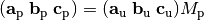
where 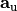,  ,
and 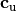 are the column vectors of the
original lattice vectors, and
,
and 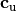 are the column vectors of the
original lattice vectors, and  ,
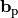, and 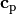 are
the column vectors of the primitive lattice vectors. Be careful that
the lattice vectors of the
,
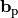, and 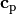 are
the column vectors of the primitive lattice vectors. Be careful that
the lattice vectors of the PhonopyAtoms class are the row vectors
(lattice_vectors). Therefore the phonopy code, which relies
on the PhonopyAtoms class, is usually written such as
primitive_lattice = np.dot(original_lattice.T, primitive_matrix).T,
or equivalently,
primitive_lattice = np.dot(primitive_matrix.T, original_lattice)
Supercell matrix¶
Supercell matrix 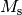 is a tranformation matrix from lattice vectors to those of a super cell. Following a crystallography convention, the transformation is given by
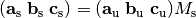
where , ,
and are the column vectors of the
original lattice vectors, and  ,
,
 , and
, and  are
the column vectors of the supercell lattice vectors. Be careful that
the lattice vectors of the
are
the column vectors of the supercell lattice vectors. Be careful that
the lattice vectors of the PhonopyAtoms class are the row vectors
(lattice_vectors). Therefore the phonopy code, which relies
on the PhonopyAtoms class, is usually written such as
supercell_lattice = np.dot(original_lattice.T, supercell_matrix).T,
or equivalently,
supercell_lattice = np.dot(supercell_matrix.T, original_lattice)
Symmetry search tolerance¶
Symmetry search tolerance (often the name symprec is used in
phonopy) is used to determine symmetry operations of the crystal
structures. The physical unit follows that of input crystal structure.